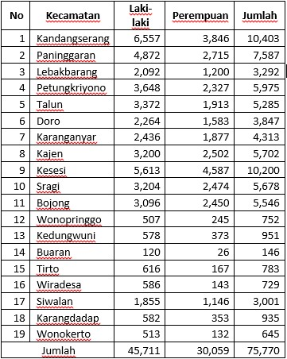

Peta Administrasi Kabupaten Pekalongan
Dalam peta administrasi ini berisikan pemetaan curah hujan, luas panen padi sawah, jumlah petani , dan ketinggian wilayah yang terbagi menurut kecamatan di kabupaten Pekalongan

Latar Belakang
Mayoritas pekerjaan penduduk dikabupaten Pekalongan berprofesi sebagai petani, kebanyakan adalah petani padi. Dalam proses penanaman padi, dibutuhkannya pengairan pada sawah-sawah mereka. Untuk memudahkan dalam proses pengairan, para petani biasanya mengandalkan dari air hujan. Curah hujan adalah jumlah air yang jatuh pada periode tertentu. Pengukurannya dilakukan dengan satuan tinggi diatas permukaan tanah horizontal yang diasumsikan tidak terjadi penguapan atau infiltrasi, run off, atau evaporasi. Pengertian curah hujan juga sering disebut dengan presipitasi juga diartikan sebagai jumlah air hujan yang turun pada wilayah tertentu dan pada kurun waktu tertentu. Jumlah curah hujan adalah volume air yang terkumpul pada permukaan bidang datar pada periode tertentu, seperti harian, mingguan, bulanan serta tahunan. Tingginya curah hujan suatu daerah, menyebabkan pengairan sawah menjadi mudah. Alhasil keberhasilan dalam panen menjadi meningkat.
Curah hujan menjadi factor utama dalam menentukan pola tanam, baik untuk sawah irigasi maupun lahan sawah tadah hujan ialah ketersediaan atau pasokan air. Dalam menentukan luas panenpadi sawa tentunya tidak hanya bergantung pada curah hujan saja, tetapi banyak factor pendukung lainnya. Seperti jumlah petani dan ketinggian suatu wilayah.
Penelitian ini bertujuan unutuk mengetahui peharuh curah hujan terhadap luas panen padi per kecamatan di kabupaten pekalongan. Yang tentunya nanti bisa digunakan sebagai strategi dalam meningkatkan luas panen padi di kemudiaan hari.
Data Yang Diolah
Data Curah Hujan
Data yang diolah adalah data banyaknya curah hujan per tahun menurut kecamatan di kabupaten Pekalongan
Data Panen Padi
Data yang diolah adalah data luas panen padi sawah menurut kecamatan di kabupaten Pekalongan
Data Petani
Data yang diolah adalah data banyaknya petani menurut kecamatan di kabupaten Pekalongan
Data Ketinggian Wilayah
Data yang diolah adalah data ketinggian menurut kecamatan di kabupaten Pekalongan
Data
Data Banyaknya Curah Hujan Kabupaten Pekalongan
Data Luas Panen Padi Sawah Kabupaten Pekalongan
Data Banyaknya Petani Kabupaten Pekalongan
Data Ketinggian Wilayah Kabupaten Pekalongan
Portfolio
Berikut Merupakan administrasi dari data yang telah dipetakan, dan sudah dieksport menjadi gambar
- Curah Hujan
- Penen Padi
- Jumlah Petani
- Ketinggian Wilayah
Data Curah Hujan
Banyaknya Curah Hujan
Data Panen Padi
Luas Panen Padi
Data Ketinggian
Ketinggian Wilayah Menurut Kecamatan
Data Petani
Banyaknya Petani
Pembahasan
Dari data curah hujan per tahun terbanyak berada pada kecamatan Karanganyar, namun untuk luas produksi padi paling tinggi berada di kecamatan Kesesi. Jadi dapat dibuat kesimpulan bahwa curah hujan memang berpengaruh terhadap produktivitas padi sawah, namun juga jumlah petani mendukung luasnya panen padi sawah. Semakin banyak petani yang ada pada suatu wilayah, semakin luas pula panen padi sawah wilayah tersebut. Dan juga tingkat curah hujan yang tinggi dipengaruhi juga oleh kitinggian suatu wilayah. Apabila suatu wilayah semakin tinggi, maka curah hujn semakin rendah.
Contact
Jika ada yang perlu ditanyakan mengenai website ini, silahkan dapat menghubungi no atau emil dibawah
Location:
Desa Mulyorejo, Kecamatan Kesesi, Kabupaten Pekalongan
Email:
yusufnurdiantoo@gmail.com
Call:
087718270027